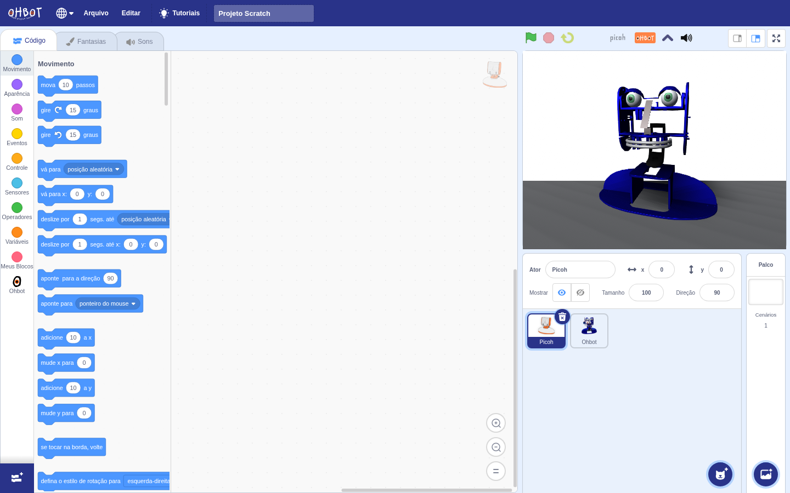
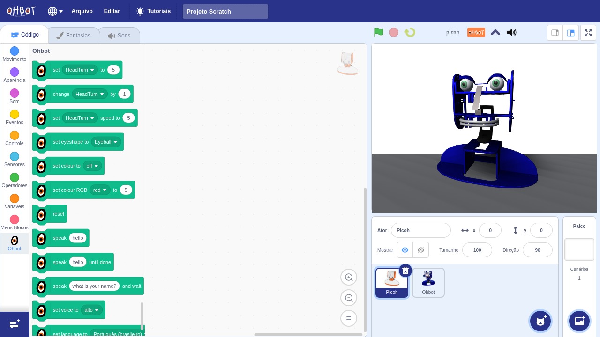
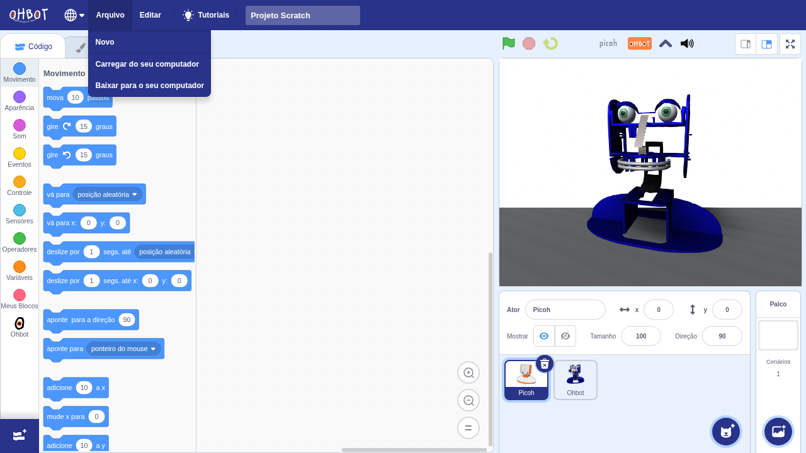

Quatro servos
Dois movem a cabeça (girar e acenar) e dois movem os lábios superior e inferior. São os únicos movimentos mecânicos do robô.
Tópico 01 · PRCCOMP
O Picoh é uma cabeça de robô social que não guarda programa nenhum: tudo o que ele faz chega por um cabo USB, em linhas de texto. Isso permite comandá-lo de duas formas, no mesmo dia de aula — arrastando blocos no navegador e escrevendo Python — e comparar as duas experiências com o mesmo hardware na mesa.
Parte 1
Por fora, o Picoh é uma cabeça sobre uma base iluminada. Por dentro, são três famílias de atuadores e um microcontrolador que só sabe obedecer:
Dois movem a cabeça (girar e acenar) e dois movem os lábios superior e inferior. São os únicos movimentos mecânicos do robô.
São os olhos. O desenho da íris, a posição da pupila, a pálpebra e o brilho são imagens na matriz — nada ali se mexe de verdade.
Dois LEDs coloridos iluminam a base translúcida. É o canal mais simples de todos e o mais visível a distância.
A placa aparece no computador como porta serial USB (2e8a:000a). Ela recebe linhas de texto e aciona servos e LEDs — não roda o seu programa.
Essa divisão é o ponto pedagógico do tópico. O programa roda sempre no computador; o robô é um periférico. Quando o Scratch mostra a boca abrindo, é o navegador enviando uma linha de texto a cada instante; quando um for em Python faz a cabeça varrer de um lado ao outro, é o mesmo canal recebendo as mesmas linhas. Trocar de linguagem não muda nada dentro do robô — muda só quem escreve na porta.
A tabela abaixo reúne o que se pode comandar. Os nomes são os da definição oficial da Ohbot, e as posições vão sempre de 0 a 10, com 5 no meio — uma escala pensada para a sala de aula, que o programa converte para graus antes de enviar.
| Nome | Tipo | 0 | 5 | 10 |
|---|---|---|---|---|
| HeadTurn | servo | esquerda | centro | direita |
| HeadNod | servo | para baixo | centro | para cima |
| TopLip | servo | abaixado | repouso | levantado |
| BottomLip | servo | fechado | repouso | bem aberto |
| EyeTurn | matriz (eixo x) | olhar à esquerda | centro | olhar à direita |
| EyeTilt | matriz (eixo y) | olhar para baixo | centro | olhar para cima |
| LidBlink | matriz (pálpebra) | olhos abertos | meio fechados | fechados |
Repare na coluna “tipo”. EyeTurn, EyeTilt e LidBlink aparecem com nome de motor na documentação, mas não são servos: são coordenadas de desenho na matriz de LED. O modelo mental de “sete motores” é uma abstração da Ohbot para unificar a interface — e é um bom exemplo, em aula, de como uma camada de software esconde o hardware real.
Parte 2
O cabo USB alimenta e comunica ao mesmo tempo: o conector pequeno vai na traseira do Picoh e o grande no computador. Assim que o robô é ligado, o sistema cria uma porta serial nova.
| Sistema | Nome da porta | Como conferir |
|---|---|---|
| Linux | /dev/ttyACM0 | ls /dev/ttyACM* e lsusb | grep 2e8a |
| Windows | COM3, COM4… | Gerenciador de Dispositivos → Portas (COM e LPT) |
| macOS | /dev/tty.usbmodem… | ls /dev/tty.usbmodem* |
Existir a porta não basta: é preciso ter permissão para abri-la. No Windows e no macOS isso já vem resolvido. No Linux, o usuário comum costuma não ter acesso a /dev/ttyACM0, e a saída limpa é uma regra do udev que libera o dispositivo para quem está na sessão gráfica:
sudo cp 60-picoh.rules /etc/udev/rules.d/
sudo udevadm control --reload-rules && sudo udevadm trigger
# desconecte e reconecte o robôO número no começo do arquivo não é decoração: as regras do udev rodam em ordem alfabética, e a regra que concede uaccess precisa vir antes da regra 70-uaccess.rules do sistema. Com o prefixo 99- a mesma regra não tem efeito nenhum — um erro clássico, e difícil de diagnosticar.
Uma porta, um programa. A porta serial é exclusiva: enquanto a aba do Scratch estiver conectada, nenhum script Python consegue abrir o robô, e vice-versa. Quase todo “o robô parou de responder” em sala é isso. Feche o que estava usando antes de trocar de ferramenta.
Parte 3
A Ohbot mantém uma versão do Scratch 3 com os blocos do robô, que roda direto no navegador em scratch.ohbot.co.uk. É o caminho recomendado para a primeira aula: a interface é a mesma do Scratch que os estudantes já conhecem, e o robô entra como mais um conjunto de blocos.

Todos ficam na categoria Ohbot, no fim da coluna de categorias. O resto do editor é o Scratch de sempre: eventos, repetições, condicionais, variáveis e operadores continuam valendo.

| Bloco | O que faz | Valores |
|---|---|---|
| set [HeadTurn] to (5) | Leva um atuador a uma posição | 0 a 10 |
| change [HeadTurn] by (1) | Soma à posição atual | −10 a 10 |
| set [HeadTurn] speed to (5) | Velocidade daquele atuador | 0 a 10 |
| set eyeshape to [Eyeball] | Desenho dos olhos na matriz | Eyeball, Angry, Sad, Heart… |
| set colour to [off] | Cor da base por nome | off, red, green, blue… |
| set colour RGB [red] to (5) | Cor da base por componente | 0 a 10 por canal |
| reset | Devolve o robô ao repouso | — |
| speak [hello] | Fala e segue o script imediatamente | texto |
| speak [hello] until done | Fala e só continua ao terminar | texto |
| speak [what is your name?] and wait | Pergunta e espera a resposta | texto |
| set voice to [alto] | Escolhe a voz | vozes do navegador |
| set language to [Português (brasileiro)] | Idioma da fala | lista de idiomas |
| lip · mouse x · mouse y | Valores para usar dentro de outros blocos: abertura do lábio durante a fala e posição do ponteiro | 0 a 10 |
A síntese de voz é do navegador, não do robô — o Picoh não tem alto-falante. O bloco speak faz o computador falar e, ao mesmo tempo, manda os lábios acompanharem. Daí o valor lip, que entrega a abertura da boca instante a instante e permite sincronizar outros efeitos com a fala.
quando a bandeira verde for clicada
reset
set colour RGB [green] to (10)
set eyeshape to [Heart]
speak [Oi, eu sou o Picoh] until done
repita (3) vezes
set [HeadTurn] to (8)
espere (0.6) segundos
set [HeadTurn] to (2)
espere (0.6) segundos
set [HeadTurn] to (5)
resetO editor não tem conta nem nuvem: tudo passa pelo menu Arquivo, em arquivos .sb3 no computador. Baixar para o seu computador salva; Carregar do seu computador abre de volta. Fechar a aba sem baixar perde o projeto.

Parte 4
Os blocos resolvem a primeira aula, mas escondem o que está acontecendo. Em Python o mesmo robô é comandado por funções curtas, e fica visível que cada gesto é uma linha escrita numa porta.
O arquivo abaixo é autocontido: depende apenas do pyserial e não exige instalar nada da Ohbot. Baixe os dois arquivos na mesma pasta.
python -m venv .venv
source .venv/bin/activate # Windows: .venv\Scripts\activate
pip install pyserial
python picoh_simples.py # demonstração completa
python picoh_simples.py --repousoComo biblioteca, o uso típico cabe em poucas linhas. Todas as posições seguem a mesma escala de 0 a 10 dos blocos, de propósito: a passagem de uma ferramenta para a outra não exige reaprender as faixas.
from picoh_simples import conectar
robo = conectar() # procura o robô nas portas USB
robo.cor(0, 200, 255) # base ciano
robo.formato_olho("coracao")
robo.brilho_olhos(10)
robo.virar(8) # cabeça para a direita
robo.olhar(8, 5) # e as pupilas acompanham
robo.falar_boca(2.5) # mexe a boca por 2,5 s
robo.concordar() # gesto de "sim"
robo.negar() # gesto de "não"
robo.piscar(2)
robo.repouso() # devolve tudo ao estado inicial
robo.fechar() # libera a porta serial| Função | O que faz | Valores |
|---|---|---|
| conectar(porta=None) | Acha o robô pelo handshake e devolve o objeto | porta explícita ou busca automática |
| cor(r, g, b) | Cor da base | 0 a 255 por canal |
| boca(abertura) | Abre a boca | 0 fechada … 10 escancarada |
| falar_boca(segundos) | Mexe a boca como se falasse | segundos |
| virar(pos) · acenar(pos) | Cabeça na horizontal e na vertical | 0 a 10 |
| concordar(vezes) · negar(vezes) | Gestos de “sim” e “não” | nº de balanços |
| olhar(x, y) | Move as pupilas | 0 a 10 · (5, 5) é o centro |
| formato_olho(nome) | Desenho dos olhos | normal, grande, bravo, triste, coracao, quadrado, oculos, cheio |
| brilho_olhos(nivel) | Brilho da matriz | 0 a 10 |
| palpebras(fechadas) · piscar(vezes) | Pálpebras e piscadas | 0 a 1 · nº de piscadas |
| mover(motor, pos, vel) | Atuador cru, para o que as demais não cobrem | 0 a 10 |
| repouso() · fechar() | Volta ao estado inicial e libera a porta | — |
Sempre termine com repouso() e fechar(). Servo ligado e parado esquenta, e a porta fica presa ao processo até ser fechada. Se um programa morreu no meio, python picoh_simples.py --repouso recolhe o robô.
A Ohbot publica a picoh-python (pip install picoh), que acrescenta síntese de fala com sincronismo labial e leitura de sensores. Vale conhecer as duas: a oficial entrega mais recursos, e a versão deste tópico entrega o protocolo à vista. Atenção a uma diferença ao comparar códigos — na biblioteca oficial a cor da base vai de 0 a 10, enquanto no protocolo cru vai de 0 a 255.
Parte 5
Blocos e Python terminam no mesmo lugar: linhas de texto ASCII terminadas por \n, escritas na porta serial. Conhecer essas linhas fecha o tópico — depois delas não há mais camada de software, só o firmware do robô.
| Linha enviada | Significado |
|---|---|
| v | Handshake: o robô responde v2…. É assim que um programa descobre qual porta é o Picoh |
| a0<m> · d0<m> | Liga e desliga o servo do atuador m |
| m0<m>,<graus>,<vel> | Move o atuador para uma posição em graus (velocidade de 0 a 250) |
| l00,r,g,b · l01,r,g,b | Os dois LEDs da base, de 0 a 255 |
| FI,<0-255> | Brilho dos olhos |
| FE,0,<x>,<y> | Posição das pupilas na matriz |
| FL,+0,<0-255> | Pálpebras (0 aberto, 255 fechado) |
| FB,<conjunto>,<18 bytes hex> | Desenho dos olhos, um conjunto de linhas por vez |
A conversão da escala didática para o hardware acontece no computador. Cada atuador tem um intervalo próprio de graus, e alguns são invertidos, conforme a definição que a Ohbot distribui com o software:
| Atuador | Índice | Graus | Invertido |
|---|---|---|---|
| HeadNod | 0 | 54 – 111 | sim |
| HeadTurn | 1 | 0 – 180 | não |
| TopLip | 4 | 0 – 99 | sim |
| BottomLip | 5 | 34 – 151 | sim |
Dá para conversar com o robô sem programa nenhum, o que costuma convencer a turma de que não há mágica. Com o Picoh conectado e nenhum outro programa usando a porta, no Linux:
stty -F /dev/ttyACM0 19200 raw
printf 'l00,255,0,0\nl01,255,0,0\n' > /dev/ttyACM0 # base vermelha
printf 'l00,0,0,0\nl01,0,0,0\n' > /dev/ttyACM0 # apagaUma curiosidade útil. A extensão do navegador abre a porta a 115200 bauds e a biblioteca de Python a 19200 — e as duas funcionam. A ligação é USB (classe CDC), em que a taxa negociada é um número que o dispositivo ignora; a velocidade real é a do barramento. A mesma linha de código num Arduino clássico, com conversor USB-serial de verdade, não perdoaria a diferença.
Parte 6
Este tópico atende aos itens “Programação com linguagens de alto nível”, “Interfaces da Computação com a Física e a Educação”, “Bibliotecas livres” e “Aplicativos didáticos e objetos educacionais digitais no ensino da Física” do conteúdo programático de PRCCOMP no PPC.